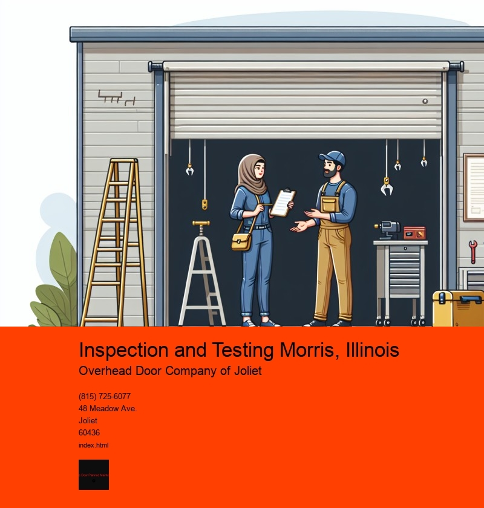

Inspection and testing form the backbone of quality assurance in various industries, ensuring that products meet the required standards and regulations before reaching consumers. In Morris, Illinois, a town that thrives on its industrial and manufacturing sectors, these processes are crucial for maintaining the integrity and reputation of local businesses. Through careful scrutiny and rigorous testing, companies in Morris can uphold the highest levels of safety and quality, fostering consumer trust and promoting economic growth.
Morris, Illinois, situated in Grundy County, is a hub of industrial activity, with sectors ranging from manufacturing to agriculture and logistics. As industries continue to evolve, the demand for reliable inspection and testing services has grown correspondingly. These services are indispensable for detecting defects, ensuring compliance with safety standards, and verifying the functionality of products and systems. In a town where industrial operations are integral to the local economy, inspection and testing play a pivotal role in sustaining business viability and enhancing competitiveness.
The inspection process involves thoroughly examining products or processes to identify any deviations from specified standards. This can include visual inspections, dimensional checks, and non-destructive testing methods such as ultrasonic, radiographic, or magnetic particle testing. In Morris, companies rely on these techniques to ensure that their products meet both national and international standards, thereby minimizing the risk of product recalls or failures that could tarnish their reputation.
Testing, on the other hand, delves deeper into assessing the performance and reliability of products under specific conditions. This can involve mechanical testing, such as stress or fatigue tests, as well as chemical and environmental testing. In Morris, industries like automotive manufacturing, where precision and reliability are paramount, testing ensures that vehicles and components perform optimally and safely. By simulating real-world conditions, testing helps identify potential weaknesses before they become critical issues, safeguarding both the company and the end-users.
The benefits of robust inspection and testing processes extend beyond individual businesses. For the community of Morris, these practices contribute to a safer environment and a more stable economy. When local industries adhere to stringent quality standards, they not only protect consumers but also enhance their reputation on a national and global scale. This can attract more business opportunities and investments to the area, fostering job creation and economic prosperity.
Moreover, inspection and testing in Morris are supported by a framework of regulations and standards set by government agencies and industry bodies. Compliance with these regulations is vital to maintaining operational licenses and certifications. As regulations continue to evolve, companies in Morris must stay abreast of changes to ensure ongoing compliance, which necessitates continuous investment in training, technology, and equipment.
In conclusion, inspection and testing are indispensable components of the industrial landscape in Morris, Illinois. They ensure that products are safe, reliable, and of high quality, protecting both consumers and businesses. As industries in Morris continue to grow and diversify, the role of inspection and testing will remain crucial in upholding the towns economic vitality and reputation. By prioritizing these processes, Morris can continue to be a beacon of industrial excellence in the region.
Visual Inspection of Door Panels Morris, Illinois
